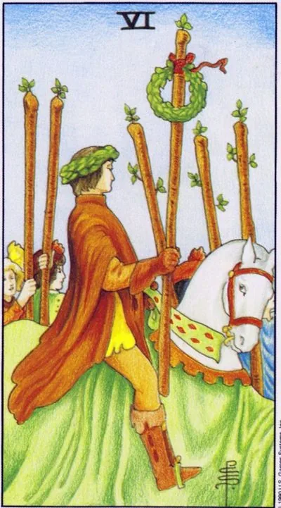

Minor Arcana · Wands
VISix of Wands
A triumphant procession on a white horse: victory is recognized, laurels are worn, and those whose opinion is important applaud.
Archetype and core meaning
The laurel wreath rider rides through the jubilant crowd, lifting a wand decorated with flowers. The six is the card of public victory: not a quiet "it happened," but recognition through the eyes of those whose opinion is weighty. The exam is passed, the project is accepted, the candidate is elected - society confirms your victory.
The card has an honest caveat: laurels are woven by others. The six teaches you to accept praise without conceit, the horse is beneath you, but the road is paved by many. The victory shared with the team doubles; the prize melts. It is the laurels of the leader who is applauded while he remembers who he owes his triumph.
Daily life
The good news is that you're praised, congratulated, exemplified. It's a good time to speak, to post, to interview -- the audience is kind. Enjoy yourself well by fulfilling the long-held promise of "success": joy, lived out loud, builds confidence.
Work and career
Professional triumph: the presentation was brilliant, the promotion was received, the project was recognized as the best. The card favors public professions and elections of any kind, reputation is at its peak. Use the moment for the next tasks - and thank the team out loud.
Relationships
You're chosen with pride and pride, with friends and family, beautiful gestures, social bragging, single Six, a fan who's nice to be around, and remember one thing: relationships don't live on stage, they live behind the scenes.
Health
Victory tone: the disease recedes, rehabilitation is ahead of schedule, training gives quick results. Confession cures psychosomatics better than pills. Be careful with fanfare - the temptation to "break everyone" in the room ends in overload: joy is also a load.
Spiritual meaning
The triumphant card: the practice has borne fruit, and the environment has noticed it, and it's about the rites of recognition, the initiation of the degree, the blessing of the teacher, and it's about reputation and influence, and the advice is simple: blessings given to others come back multiplied.
Laurels are inverted: recognition slips away, victory is contested or bought by intrigue, the ego sounds louder than the case.
Archetype and core meaning
The triumph turns into a scandal: the victory is contested, the award went to another, and yesterday's crowd hisses after. Sometimes it's an honest defeat - the result was weaker than the stated one; sometimes a victory bought by intrigue, and such a crown burns whiskey.
There's a quiet, frequent story, an unrecognized talent: the job is great, and you're not seen, and the bitterness builds up inside, and then the card asks the awkward question: do you work for the cause or for the applause? While laurels are more important than the road, every victory is imaginary. Free yourself from the appreciation, recognition will come back.
Daily life
There is no expected ovation: effort went unnoticed, praise was appropriated by another, the home greets the news coolly, gossip and hurtful comparisons are possible. Don't ask for approval - fix the result for yourself: real satisfaction today is obtained in the business, not in the reviews.
Work and career
They gave the promotion to someone else, the idea was attributed to the boss, the client chose a competitor, the card warns of narcissism: confidence without results annoys the management, pause in the struggle for status and strengthen the texture — numbers and terms are more eloquent than regalia.
Relationships
Relationships become the arena of status: your partner is measured by achievement, demands admiration, is ashamed of you in front of friends; you can have a flaunted romance where you care about the picture, not the intimacy; or you feel like a statist in front of him; a love where you have to win applause is a performance, not a union.
Health
The stress of non-recognition is reflected in the body: pressure jumps, insomnia suffers, skin reacts with rashes, there is a risk of self-medication and dangerous experiments "to spite everyone." Calm the inner triumphant: the body needs a regimen and a doctor, not records against all.
Spiritual meaning
Pride on the altar: practice becomes self-exhibition, power flows into image maintenance, the card warns of envy and vulnerability to the flattery through which foreign influences enter, the old cure is reliable: anonymous good deeds without witnesses clear the channel faster than rites.
🌿 How the school reads this rank
The main idea
Acknowledged victory: people around them saw the result and are ready to take a person as an example.
How it manifests
In work, recognition, reputation, mentoring, in relationships, respect for one's own and others' desires, in development, helping others not for one's own sake, but for their growth.
The shadow side
Recognition becomes superiority and endless unsolicited advice.
Keywords
triumph · recognition · mentorship · example · dignity
📜 In detail — from the rank lecture
Essence of the card
The triumphant after the Five is, "all eyes are on the person who has already won." Triumph is "recognition of your victory by other people": people applaud, take you as an example.
Upright position
- Social/work: share your success story (“I wanted to, and I did, and you can do it”), become a mentor, “you are approached for advice”; don’t be afraid of competitors – “as long as others rise to your heights, you already know how to do it, and you will rise even higher.”
- Finance: Recognition is monetized, “money starts to make money on its own.”
- Relationships: feeling respected, winning a partner, feeling worthwhile — your desire has weight, but also dignity in respecting the other person’s desires. Motivation by example (sushi vs. pizza): showing your desire clearly — your partner lights up your own; “feed the other person with your energy.”
- Self-development: Helping others for their own sake – “doing it not for yourself... but for others to motivate.”
- Symbolism: the white horse has "good, altruistic motives"; if the horse were black, it would be selfish to "rise above people." The red and white rose are different desires: white is spiritual, red is physical, confined to the material world.
Negative meaning
• arrogant pop star, PHC - "revel in superiority, indicate what to do and how to do, no matter whether they ask"; your story is "an example, not an instruction."
School emphases and distinctive points
- “Wait did not draw much for nothing”: the scales of the merchant refer to Justice and “a balanced decision”.
- The animals in the cards are “our animal aspirations”; the color of the horse encodes the motif (white is the light side, black is the selfish side).
- Color code: red - matter ("red rose - emblem of the material world", wine - blood of Christ), white - spirit ("water from the wound of Christ" with a spear of fate); white flowers - unselfishness.
- Slavic series: sayings, compassionate grandmothers, “plombir 20 kopecks”; Soviet cartoons – an uncle from the factory of gutalin (“sends someone without getting hit”) and a cartoon about a bouquet (“for what?” – “just so!”).
- Modern images: Google (“he can’t Google”), Facebook, slipping friends, comments “School of Modern Tarot, you are the best tarologist” as an illustration of an inverted six wands.
- Techniques: argue with the classic correctly ("I do not use the author of the book, give my vision"); anti-detailing - "simplify... details can distort the general meaning"; "history is an example, not an instruction"; chess pattern and the baton of the triumphant without leaves - only hypotheses.
Keywords
triumph, recognition of victory, “motivate by example”, success story, self-esteem.